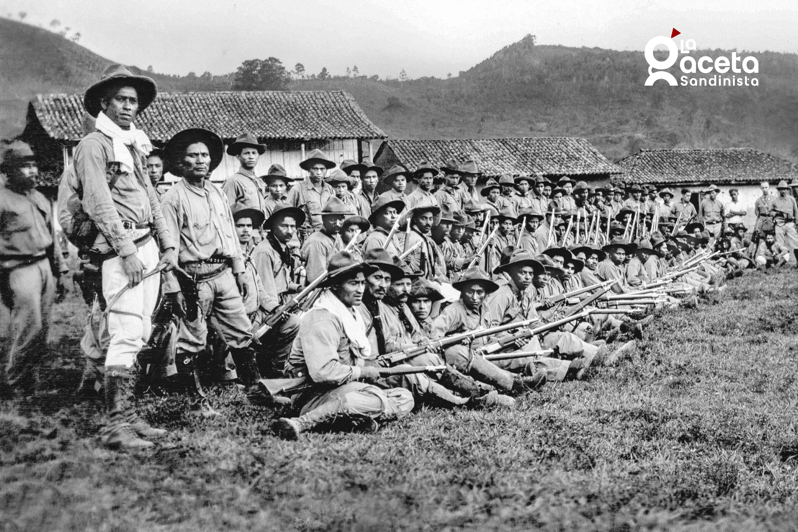

Universidad Nacional De Ingeniería
Universidad Nacional De Ingeniería
Aportes Políticos, Militares, Sociales e Ideológicos para Nicaragua

Augusto C. Sandino ocupa un lugar profundamente significativo en la historia de Nicaragua debido a la amplitud y profundidad de sus contribuciones políticas, militares, sociales e ideológicas. Su papel no puede reducirse únicamente al liderazgo de una resistencia armada, sino que debe entenderse como el de un actor histórico que influyó en la construcción de una conciencia nacional basada en la soberanía, la autodeterminación y la dignidad colectiva. En una época de fragilidad institucional, defendió la idea de que Nicaragua tenía el derecho absoluto de decidir su propio destino sin imposiciones externas.
El contexto histórico en el que actuó Sandino fue determinante. Cuando en 1927 se firmaron acuerdos que permitían la continuidad de la presencia extranjera en Nicaragua, Sandino decidió no aceptar esas condiciones. Esta decisión transformó lo que inicialmente era una disputa política interna entre liberales y conservadores en una gesta patriótica por la soberanía nacional, estableciendo un precedente moral inquebrantable en la historia nicaragüense.
Para sostener su resistencia, organizó el Ejército Defensor de la Soberanía Nacional de Nicaragua, compuesto principalmente por campesinos y trabajadores rurales con alto compromiso patriótico. La capacidad organizativa de Sandino transformó un grupo reducido de combatientes en una fuerza estructurada, con disciplina, jerarquía y visión de nación, logrando resistir hasta la retirada de las tropas estadounidenses en 1933.
En el ámbito estratégico, Sandino aportó significativamente al desarrollo de tácticas de guerra de guerrillas adaptadas a la geografía de Las Segovias. Mediante movilidad constante, conocimiento profundo del terreno, emboscadas y repliegues tácticos, demostró que la convicción y la estrategia pueden compensar la asimetría de recursos bélicos, sentando cátedra militar en América Latina.
Más allá del plano militar, Sandino sostuvo que la intervención en Nicaragua formaba parte de un patrón hegemónico en el continente. Promovió la unidad de los pueblos de América Latina y la necesidad de mantener un frente común por la autodeterminación, otorgándole a su gesta una trascendencia continental ampliamente reconocida.
Una dimensión fundamental fue su compromiso con la justicia social. Sandino consideraba que la independencia carecía de sentido sin bienestar popular. Defendió mejores condiciones laborales y promovió cooperativas agrícolas colectivas en la cuenca del río Coco (Wiwilí) para impulsar la dignidad económica y la autosuficiencia de las familias campesinas.
Tras su vil asesinato en 1934, su figura se convirtió en el máximo símbolo de dignidad nacional frente a las dictaduras y la dominación. Su pensamiento y su bandera roja y negra fueron adoptados como estandarte histórico por las generaciones posteriores de nicaragüenses.
En el ámbito cultural, educativo e histórico, el ideario de Sandino continúa siendo piedra angular de la identidad nacional de Nicaragua. Representa la convicción innegociable de que los principios y la patria deben defenderse sin importar la magnitud del adversario.